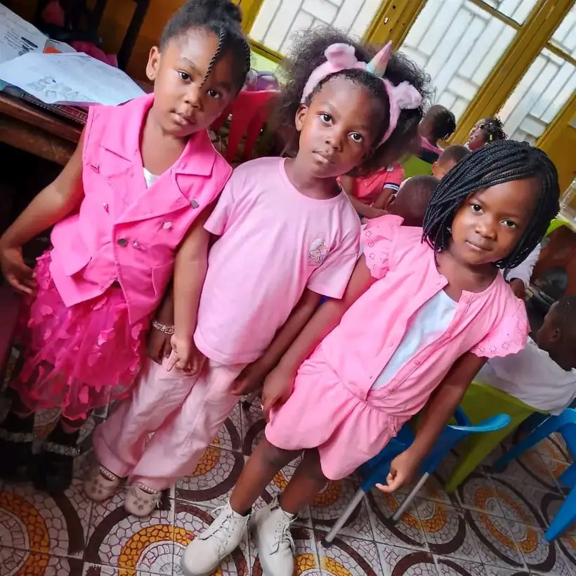
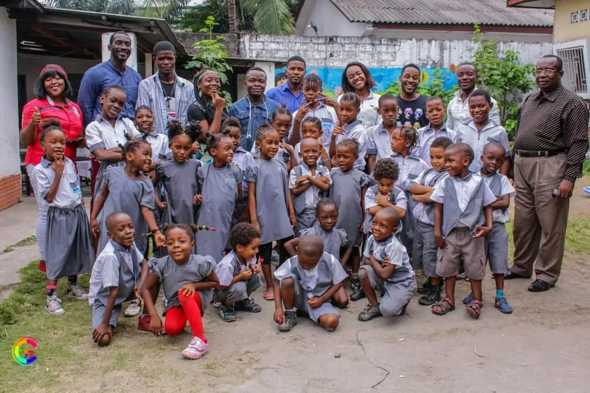

L'établissement
Le Complexe Scolaire Le Sage — The Wise School International — enseigne à Kinshasa, dans la commune de Barumbu, selon le programme national congolais.
L'école porte deux noms parce qu'elle enseigne en deux langues. En français, Complexe Scolaire Le Sage. En anglais, The Wise School International. Les deux figurent sur son emblème, autour de l'étoile d'or.
Elle accueille les enfants de la maternelle et du primaire, et les prépare à l'ENAFEP — l'examen national de fin d'études primaires.
Des personnes que les familles connaissent, et qu'elles peuvent joindre.
Nos débuts
Toute l'école tenait sur une photographie : les élèves, les enseignants et la direction, réunis dans la cour. Les uniformes gris sont déjà là, et plusieurs de ces visages accompagnent encore les familles aujourd'hui.
Le Complexe Scolaire Le Sage a grandi depuis, mais la manière de faire n'a pas changé : chaque enfant est connu par son nom.

L'entrée et la sortie passent par un portail contrôlé. À la sortie, l'enfant ne repart qu'accompagné d'une personne que sa famille a désignée à l'inscription — ou seul, si les parents l'ont expressément autorisé par écrit.
Chaque famille désigne son tuteur principal et jusqu'à trois personnes autorisées. Ces personnes sont approuvées par la Direction, et leur photographie est prise à l'école : le gardien doit reconnaître un visage en quelques secondes.
Les notes, les appréciations et la conduite sont enregistrées tout au long de l'année. Les parents suivent la scolarité de leur enfant et reçoivent les informations de l'école directement.
Lorsqu'un élève passe sous la moyenne dans une matière au cours d'un mois, l'école le repère et propose un cours de rattrapage : la famille est convoquée pour en convenir avec la Direction.
The Wise School International — Complexe Scolaire Le Sage — is located at Kabambare 4367, Bon Marché, Barumbu, Kinshasa. We follow the national curriculum of the Democratic Republic of the Congo and prepare pupils for the national primary examination (ENAFEP).
The school uniform is grey and white and carries the school badge. The academic year runs from September to August.